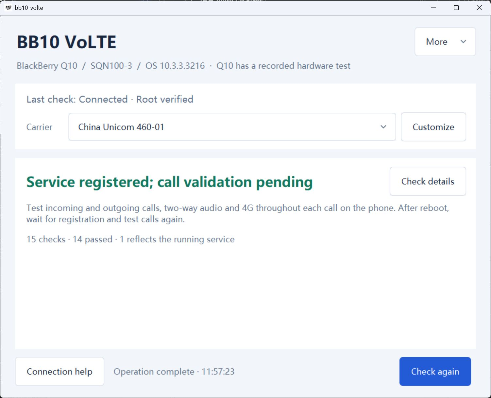
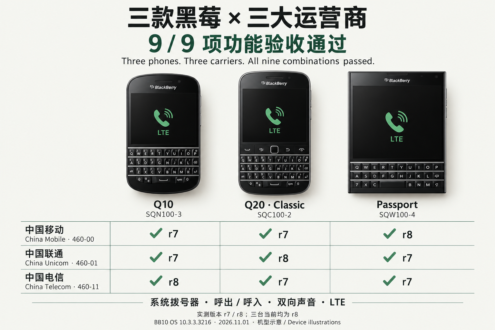

Your SIM card
Keep your own number and plan.
Your SIM must have VoLTE enabled.
BLACKBERRY 10 · NATIVE VOLTE
Install once from your Windows PC or Mac. Then power off, change your SIM and start your phone: it automatically adapts to China Mobile, China Unicom or China Telecom. Keep using your number and the built-in dialer, without reconnecting to a computer or flashing again.
Download for macOSv0.5.0-r8 · Experimental release. For rooted SQN100-3 / SQC100-2 / SQW100-4 on OS 10.3.3.3216. Passport may need one extra normal restart when entering or leaving Telecom.

Device / carrier combinations testedThree exact models, all three carriers
Install once from your computerThe phone adapts after a powered-off SIM swap
Keep your number and dialerCalls stay on LTE
VoLTE means making calls over your carrier’s 4G network.
This tool enables calling features already in BB10.
It does not provide free calls or an internet calling account.
Keep your own number and plan.
Your SIM must have VoLTE enabled.
Enable BB10’s built-in IMS service.
Files are checked before a separate copy is modified.
Use the phone’s built-in dialer.
Your carrier’s usual charges apply.
Root gives administrator access to the phone. It is needed to enable VoLTE, but you do not need hardware changes or another dialer app.
The original /radio/bin/ims_rrm is not overwritten. Native files are checked against the project’s required hashes before installation.
The tool checks the model, OS, SIM, LTE, network settings and pre-install state. It stops if a required condition is not met.
Use your computer to connect, check and install.
Then make and receive calls on the phone.
A status message alone cannot tell you it works.
Use a trusted USB connection and check the exact hardware variant.
Open Automatic carriers, back up and install, then restart normally.
Power off, swap your SIM and start normally. Passport may need another restart for Telecom policy changes.
Unplug USB. Make and receive a call for at least 35 connected seconds each; check audio, LTE and your number.
Your post-install call checklist
Test every item yourself.
The tool will not place calls for you.
Phone tests completedAll nine combinations passed functional checks on r7/r8. All three phones now run r8. The matrix records the payload used for each test; this is not nine repeated tests of identical r8 bytes. Current Mac USB acceptance remains pending.
This is still experimental, with no universal guarantee.
Your exact model, OS version, SIM and carrier
all affect whether it will work.

Device illustrations summarize real functional test results. Each cell retains its actual r7/r8 payload revision; all three phones currently run r8. Details and evidence follow below.
Open full-size imageSQN100-3 · OS 10.3.3.3216
China Mobile 460-00, Unicom 460-01 and Telecom 460-11. Mobile LTE persistence and Unicom number display corrected.
SQC100-2 · OS 10.3.3.3216
China Mobile 460-00, Unicom 460-01 and Telecom 460-11. Automatic startup and calls validated on all three carriers.
SQW100-4 · OS 10.3.3.3216
China Mobile 460-00, Unicom 460-01 and Telecom 460-11. Entering or leaving Telecom may require an extra normal restart.
| Device | China Mobile | China Unicom | China Telecom |
|---|---|---|---|
| Q10 SQN100-3 | Passed · r7 | Passed · r7 | Passed · r8 |
| Q20 SQC100-2 | Passed · r7 | Passed · r8 | Passed · r7 |
| Passport SQW100-4 | Passed · r8 | Passed · r7 | Passed · r7 |
Evidence combines owner-confirmed audio, LTE and connected duration with current-boot phone readback. Some ring logs rolled over; a post-call LTE snapshot is not a continuous trace. Q10 Telecom uses the final successful pair; earlier peer-number issues are excluded, so first-attempt success was not assessed in that run. See the acceptance record.
Current public release
v0.5.0-r8 · Experimental prerelease
Windows 10 / 11 · x64 · Portable EXE
Download and open the EXE. Required components are included; no separate Python or OpenSSH installation is needed.
The EXE is not Authenticode-signed. Verify its checksum before running it. Launch testing has mainly been on Windows 11 x64.Apple Silicon + Intel · Universal DMG
Open the DMG, drag the app to Applications, then launch it. Python and Tk are included; SSH/SCP use the versions built into macOS.
The app and DMG are signed and notarized. The package includes Intel binaries, but has not been run on an Intel Mac for validation.Prefer to run from source?Install Python 3.14 with Tk, then run python tools/gui.py.
Direct downloads via Cloudflare R2. No GitHub connection is needed. Use the same-version GitHub copy below if this route is unavailable; file bytes and SHA-256 checksums match.
Help other BlackBerry owners discover the project.
Whether it worked or failed, your model and test results can help.
For step-by-step setup, installation,
recovery and troubleshooting, open the guide.
The tested variants are Q10 SQN100-3, Q20 SQC100-2 and Passport SQW100-4 on OS 10.3.3.3216, with China Mobile 460-00, Unicom 460-01 and Telecom 460-11 USIMs without ISIM. Other variants and SIM types are not covered. First-time Root is separate from installing automatic carrier support.
Yes. Root means administrator access to the phone. If you already have matching root access and trusted SSH, you do not need to flash again. Unrooted Q10 phones can use the first-time preparation wizard, but flashing erases data and this workflow remains experimental. Back up first.
No. It is not an internet calling service and does not offer free calls. You keep your SIM, number and plan, and your carrier’s charges apply. Your SIM needs VoLTE enabled and working 4G data. This project does not unlock SIMs.
Not necessarily. It only means the phone has registered with the carrier’s calling service. Test outgoing and incoming calls, audio in both directions and 4G throughout, then repeat unplugged and after a normal restart. Long-term reliability and emergency calls are not fully validated. Do not rely on it as your only way to make emergency calls.
Not for the Windows EXE or macOS DMG. You only need to install Python 3.14 with Tk if you run from source. Download the package and its matching SHA-256 file from the same release.
No. When you choose to export, the tool saves a redacted check report locally. It does not upload it. Review the report before sharing, and do not include the private folder, private keys or private installation records.